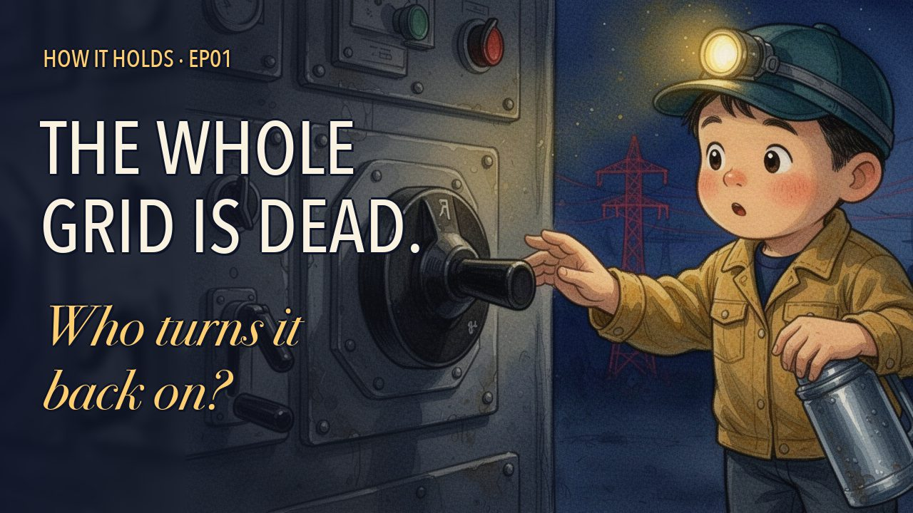
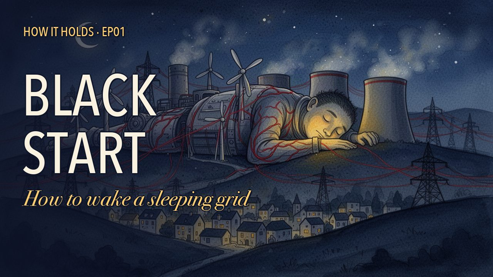
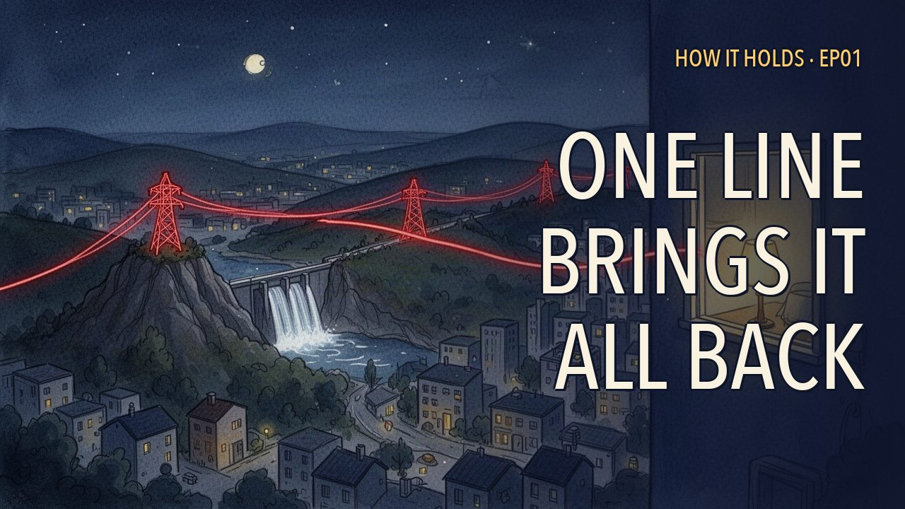

結論：英語の解説動画 1 本（9:56）が完成。自動の品質チェックは全部合格です。
下は元の高画質版（小分け読み込み・重い）
再生できない時は 予告編（62秒・軽量版）



| 長さ | 9分56秒（596.1秒） |
| カット数 | 185（ショット186） |
| 絵の枚数 | 124枚（＋場面カード9枚） |
| 同じ絵の最大使用回数 | 2回（2回目は必ず60秒以上あと） |
| ゆっくり寄る演出 | 3本：4:54 針（SC05）／5:47 ブレーカー直前の手（SC06）／9:50 最後の赤い線（SC09） |
| 話す速さ | 1157語・131語/分（声は等速のまま） |
| 音量 | −16.0 LUFS、ピーク −1.5 dB |
| 明るさ | 全17,884コマで白飛び0・黒つぶれ0 |
| 字幕 | 133本、はみ出し0、カード中の表示0 |
| お金（実額） | 165.95円（絵の生成 fal。声 Gemini 無料枠＝0円、サムネは既存の絵から作って0円） |
| Claude 使用量 | 前回 1,876,454 ＋ 今回 507,313（ページ作成時点）＝ 2,383,767（週の約0.12%） |
実測: usage_measure.py 0429ba77-d6ea-4115-a5c4-77c3bb5630c1 → weighted 1876454.35
実測: usage_measure.py 0d5bca78-ebcb-41e9-aa99-ce07e92bb18e → weighted 507312.55（ページ作成時点）
合計 2383766.9 ÷ 20,000,000 = 0.119 %
実測: QA（ffmpeg signalstats / ebur128 / timeline.json）
{
"format_ok": true,
"duration_s": 596.12,
"size_mb": 93.7,
"luma": {
"frames": 17884,
"min": 37.988,
"max": 138.497,
"white_gt235": 0,
"black_lt12": 0
},
"short_shots_excl_snap": 0,
"max_uses": 2,
"reuse_gap_lt60": 0,
"static_gt6s": 0,
"captions": 133,
"captions_clipped": 0,
"captions_during_cards": 0,
"wer_total": 0.023,
"loudness_final_LUFS": -16.0,
"true_peak_dB": -1.5,
"sfx_LUFS_in_final": -29.1,
"bgm_LUFS_in_final": -31.1,
"words": 1157,
"narration_s": 529.6,
"wpm": 131.1,
"cuts": 185,
"pictures": 124,
"push_ins": [
{
"t": "4:54.35",
"pic": "05e",
"sc": "SC05"
},
{
"t": "5:47.00",
"pic": "06e",
"sc": "SC06"
},
{
"t": "9:50.27",
"pic": "09i",
"sc": "SC09"
}
],
"pass": true
}